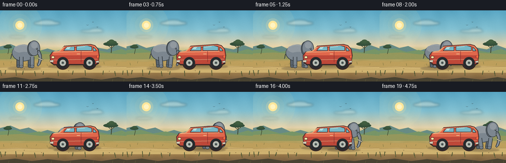
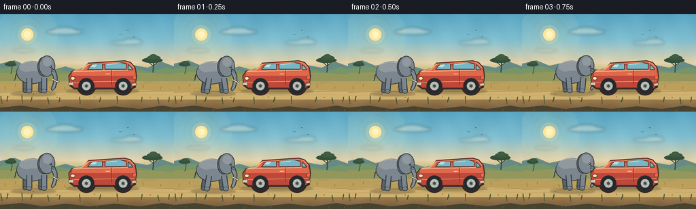
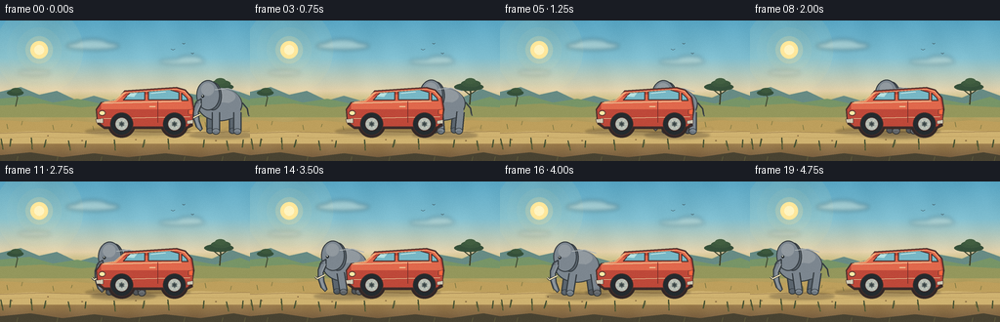
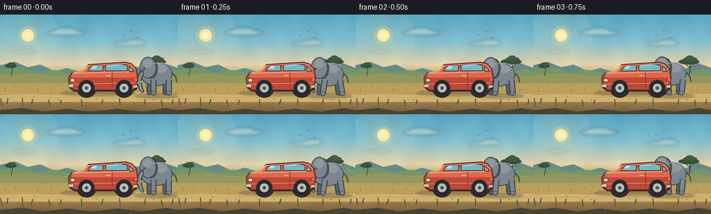

CODING AGENTS AS PIXEL WORLD MODELS
traex/DeepSeek-V4.1-Flash · dynamic_spatial_relationship_0065
点击播放 · 原生 RGB 像素
逐轮保存的候选
回放视频、检查图与代码变化。
每份候选均可单独播放。实际图片检查记录在下方工具轨迹中。
候选 01播放与检查图
点击播放 · 原生 RGB 像素


展开代码变化
--- 上一保存版本
+++ 本次保存版本
@@ -0,0 +1,417 @@
+from __future__ import annotations
+
+import math
+from pathlib import Path
+
+import imageio_ffmpeg
+import numpy as np
+from PIL import Image, ImageDraw, ImageFilter
+
+import artifact_io
+
+
+ROOT = Path(__file__).resolve().parent
+WIDTH, HEIGHT = 256, 144
+FRAMES = 20
+FPS = 4
+S = 4
+
+
+def box(values):
+ return tuple(int(round(value * S)) for value in values)
+
+
+def point(values):
+ return tuple(int(round(value * S)) for value in values)
+
+
+def polygon(draw, points, fill, outline=None, width=1):
+ draw.polygon([point(p) for p in points], fill=fill)
+ if outline is not None:
+ draw.line(
+ [point(p) for p in points] + [point(points[0])],
+ fill=outline,
+ width=max(1, int(round(width * S))),
+ joint="curve",
+ )
+
+
+def ellipse(draw, bounds, fill, outline=None, width=1):
+ draw.ellipse(
+ box(bounds),
+ fill=fill,
+ outline=outline,
+ width=max(1, int(round(width * S))) if outline else 0,
+ )
+
+
+def line(draw, points, fill, width=1, joint="curve"):
+ draw.line(
+ [point(p) for p in points],
+ fill=fill,
+ width=max(1, int(round(width * S))),
+ joint=joint,
+ )
+
+
+def make_background():
+ high_w, high_h = WIDTH * S, HEIGHT * S
+ rows = np.arange(high_h, dtype=np.float32) / S
+ stops_y = np.array([0, 38, 72, 88, 111, 125, 144], dtype=np.float32)
+ stops_rgb = np.array(
+ [
+ [87, 164, 194],
+ [128, 190, 207],
+ [228, 210, 171],
+ [183, 177, 105],
+ [177, 147, 88],
+ [159, 127, 77],
+ [112, 88, 62],
+ ],
+ dtype=np.float32,
+ )
+ colors = np.stack(
+ [np.interp(rows, stops_y, stops_rgb[:, channel]) for channel in range(3)],
+ axis=1,
+ )
+ arr = np.repeat(colors[:, None, :], high_w, axis=1)
+
+ # Gentle atmospheric variation keeps the wide color bands from looking flat.
+ x = np.arange(high_w, dtype=np.float32)[None, :]
+ y = np.arange(high_h, dtype=np.float32)[:, None]
+ haze = 2.4 * np.sin(x * 0.021 + y * 0.013) + 1.4 * np.cos(x * 0.047 - y * 0.017)
+ arr += haze[:, :, None]
+ arr = np.clip(arr, 0, 255).astype(np.uint8)
+ return Image.fromarray(arr, "RGB").convert("RGBA")
+
+
+def add_sun_and_clouds(img):
+ glow = Image.new("RGBA", img.size, (0, 0, 0, 0))
+ gd = ImageDraw.Draw(glow)
+ for radius, alpha in [(45, 18), (33, 24), (23, 36), (14, 80)]:
+ gd.ellipse(box((40 - radius, 30 - radius, 40 + radius, 30 + radius)), fill=(255, 229, 154, alpha))
+ img.alpha_composite(glow)
+
+ clouds = Image.new("RGBA", img.size, (0, 0, 0, 0))
+ cd = ImageDraw.Draw(clouds)
+ for x, y, w, h, alpha in [
+ (68, 22, 54, 8, 92),
+ (79, 19, 31, 8, 82),
+ (163, 39, 47, 6, 58),
+ (182, 36, 25, 7, 70),
+ (18, 51, 34, 5, 48),
+ ]:
+ ellipse(cd, (x, y, x + w, y + h), (255, 244, 218, alpha))
+ clouds = clouds.filter(ImageFilter.GaussianBlur(2.1 * S))
+ img.alpha_composite(clouds)
+
+ draw = ImageDraw.Draw(img)
+ ellipse(draw, (31, 21, 49, 39), (255, 231, 155, 255))
+ ellipse(draw, (35, 25, 45, 35), (255, 244, 194, 255))
+
+
+def add_distant_landscape(img):
+ draw = ImageDraw.Draw(img)
+ polygon(
+ draw,
+ [(0, 86), (0, 73), (21, 68), (40, 76), (58, 72), (79, 82), (96, 77), (113, 82), (138, 75), (164, 81), (190, 74), (217, 79), (237, 70), (256, 77), (256, 91)],
+ (103, 139, 132, 255),
+ )
+ polygon(
+ draw,
+ [(0, 90), (0, 80), (30, 77), (54, 84), (79, 80), (107, 86), (132, 81), (163, 86), (193, 80), (220, 85), (246, 78), (256, 82), (256, 96)],
+ (119, 149, 103, 255),
+ )
+ polygon(
+ draw,
+ [(0, 92), (0, 87), (44, 85), (82, 89), (121, 86), (158, 90), (201, 86), (256, 89), (256, 99), (0, 99)],
+ (148, 151, 92, 255),
+ )
+
+ # Flat-topped acacia silhouettes sell the savanna setting without competing with the actors.
+ trunk = (62, 67, 46, 255)
+ canopy = (53, 80, 58, 255)
+ line(draw, [(225, 86), (226, 73), (222, 66)], trunk, 1.4)
+ line(draw, [(226, 75), (235, 69)], trunk, 1.1)
+ line(draw, [(226, 77), (217, 70)], trunk, 1.1)
+ ellipse(draw, (209, 64, 239, 72), canopy)
+ ellipse(draw, (216, 61, 236, 68), (60, 88, 61, 255))
+ ellipse(draw, (220, 59, 231, 65), (65, 94, 64, 255))
+
+ line(draw, [(16, 88), (18, 79), (15, 73)], trunk, 1.0)
+ ellipse(draw, (7, 71, 24, 77), canopy)
+ ellipse(draw, (11, 69, 22, 74), (60, 88, 61, 255))
+
+ # Small birds add scale while leaving the main action area clear.
+ bird = (50, 65, 70, 210)
+ for x, y, scale in [(177, 30, 1.0), (188, 24, 0.8), (197, 34, 0.7)]:
+ line(draw, [(x - 2 * scale, y - 1), (x, y), (x + 2 * scale, y - 1)], bird, 0.6)
+
+
+def add_ground_and_road(img):
+ draw = ImageDraw.Draw(img)
+ polygon(
+ draw,
+ [(0, 108), (0, 102), (37, 104), (68, 102), (105, 105), (146, 103), (190, 105), (226, 102), (256, 104), (256, 125), (0, 125)],
+ (189, 159, 92, 255),
+ )
+ polygon(
+ draw,
+ [(0, 115), (35, 113), (76, 115), (112, 113), (158, 115), (203, 112), (256, 114), (256, 126), (0, 126)],
+ (207, 178, 112, 255),
+ )
+ line(draw, [(0, 115.5), (43, 114), (91, 115.3), (141, 113.8), (190, 114.7), (256, 113.5)], (154, 124, 78, 255), 0.7)
+ line(draw, [(0, 120), (34, 119), (69, 120.2), (108, 118.8), (153, 120), (196, 118.5), (256, 119.3)], (174, 143, 83, 210), 0.6)
+
+ # Scattered grass and pebbles break up the road and ground planes.
+ grass = (91, 99, 52, 255)
+ for x, y, height, lean in [
+ (8, 111, 5, -1),
+ (22, 107, 4, 1),
+ (55, 112, 5, -1),
+ (73, 109, 3, 1),
+ (96, 112, 4, -1),
+ (147, 108, 4, 1),
+ (211, 109, 5, -1),
+ (236, 111, 4, 1),
+ ]:
+ line(draw, [(x, y), (x + lean, y - height)], grass, 0.55)
+ for x, y, r in [(12, 122, 0.8), (49, 118, 0.7), (84, 123, 1.0), (139, 122, 0.7), (221, 123, 0.9)]:
+ ellipse(draw, (x - r, y - r * 0.55, x + r, y + r * 0.55), (128, 101, 63, 220))
+
+
+def add_shadow(img, center_x, y, width, height, alpha):
+ overlay = Image.new("RGBA", img.size, (0, 0, 0, 0))
+ draw = ImageDraw.Draw(overlay)
+ ellipse(draw, (center_x - width / 2, y - height / 2, center_x + width / 2, y + height / 2), (58, 46, 36, alpha))
+ overlay = overlay.filter(ImageFilter.GaussianBlur(1.0 * S))
+ img.alpha_composite(overlay)
+
+
+def draw_elephant(img, x, frame):
+ y = 58 + 0.65 * math.sin(2 * math.pi * frame / 5)
+ phase = 2 * math.pi * frame / 5
+ swing = 3.0 * math.sin(phase)
+ far_swing = 2.4 * math.sin(phase + math.pi)
+
+ add_shadow(img, x + 31, 117.4, 67, 7.5, 72)
+
+ dust = Image.new("RGBA", img.size, (0, 0, 0, 0))
+ dd = ImageDraw.Draw(dust)
+ puff_seed = (frame * 7 + 3) % 11
+ for foot_x in (x + 24, x + 48):
+ for j in range(3):
+ dx = -5 - j * 5 - (puff_seed % 4)
+ dy = -1.0 - j * 1.2 - (j % 2)
+ r = 2.2 + j * 0.8
+ ellipse(dd, (foot_x + dx - r, 114.8 + dy - r * 0.55, foot_x + dx + r, 114.8 + dy + r * 0.55), (204, 174, 111, 52 - j * 9))
+ dust = dust.filter(ImageFilter.GaussianBlur(1.0 * S))
+ img.alpha_composite(dust)
+
+ draw = ImageDraw.Draw(img)
+ outline = (52, 59, 64, 255)
+ dark = (91, 101, 110, 255)
+ mid = (124, 134, 143, 255)
+ light = (145, 153, 159, 255)
+ inner_ear = (88, 97, 105, 255)
+ ivory = (242, 225, 179, 255)
+
+ # Tail and far legs sit behind the body.
+ line(draw, [(x + 10, y + 26), (x + 5, y + 32), (x + 4, y + 38)], outline, 1.6)
+ line(draw, [(x + 4, y + 38), (x + 3, y + 40)], (65, 72, 77, 255), 1.2)
+ for lx, foot_shift in [(x + 19, far_swing), (x + 42, -far_swing)]:
+ line(draw, [(lx, y + 38), (lx + foot_shift, y + 54)], outline, 7.8)
+ line(draw, [(lx, y + 38), (lx + foot_shift, y + 54)], dark, 5.5)
+ ellipse(draw, (lx + foot_shift - 3.7, y + 52, lx + foot_shift + 3.7, y + 58), outline)
+ ellipse(draw, (lx + foot_shift - 2.8, y + 52.5, lx + foot_shift + 2.8, y + 57), dark)
+
+ # Main mass and the visible near legs.
+ ellipse(draw, (x + 6, y + 11, x + 52, y + 45), outline)
+ ellipse(draw, (x + 7, y + 11, x + 51, y + 44), mid)
+ ellipse(draw, (x + 10, y + 12, x + 45, y + 28), light)
+ ellipse(draw, (x + 13, y + 26, x + 50, y + 43), mid)
+
+ for lx, foot_shift in [(x + 25, -swing), (x + 47, swing)]:
+ line(draw, [(lx, y + 36), (lx + foot_shift, y + 55)], outline, 8.7)
+ line(draw, [(lx, y + 36), (lx + foot_shift, y + 55)], mid, 6.2)
+ ellipse(draw, (lx + foot_shift - 4.1, y + 52.5, lx + foot_shift + 4.1, y + 58.8), outline)
+ ellipse(draw, (lx + foot_shift - 3.2, y + 53, lx + foot_shift + 3.2, y + 57.8), mid)
+ line(draw, [(lx + foot_shift - 2.3, y + 56.2), (lx + foot_shift + 2.0, y + 56.2)], dark, 0.8)
+
+ # Ear, head, trunk, eye, and tusk form the readable side profile.
+ ellipse(draw, (x + 37, y + 5, x + 55, y + 34), outline)
+ ellipse(draw, (x + 38, y + 6, x + 54, y + 33), dark)
+ ellipse(draw, (x + 40.5, y + 9, x + 51.5, y + 29), inner_ear)
+ ellipse(draw, (x + 39, y + 3, x + 63, y + 34), outline)
+ ellipse(draw, (x + 40, y + 4, x + 62, y + 33), mid)
+ ellipse(draw, (x + 45, y + 6, x + 58, y + 19), light)
+
+ trunk = [
+ (x + 58, y + 22),
+ (x + 63, y + 25),
+ (x + 66, y + 33),
+ (x + 66, y + 42),
+ (x + 63, y + 51),
+ (x + 59, y + 55),
+ (x + 57, y + 53),
+ (x + 60, y + 45),
+ (x + 61, y + 36),
+ (x + 58, y + 29),
+ ]
+ polygon(draw, trunk, mid, outline, 1.2)
+ line(draw, [(x + 58.5, y + 27), (x + 62, y + 34), (x + 63, y + 44), (x + 60, y + 52)], light, 1.2)
+ line(draw, [(x + 59, y + 38), (x + 67, y + 42), (x + 69, y + 40)], outline, 2.2)
+ line(draw, [(x + 59, y + 38), (x + 67, y + 42), (x + 69, y + 40)], ivory, 1.25)
+
+ ellipse(draw, (x + 55, y + 18, x + 58, y + 21), (34, 40, 44, 255))
+ ellipse(draw, (x + 55.7, y + 18.4, x + 56.8, y + 19.5), (225, 226, 210, 255))
+ line(draw, [(x + 57, y + 26), (x + 61, y + 27)], outline, 0.7)
+
+ # A small back highlight separates the elephant from the car when it emerges.
+ line(draw, [(x + 13, y + 15), (x + 25, y + 11.5), (x + 38, y + 13)], (177, 183, 183, 210), 1.1)
+
+
+def draw_car(img):
+ draw = ImageDraw.Draw(img)
+ outline = (67, 45, 42, 255)
+ body = (190, 72, 57, 255)
+ body_dark = (139, 48, 43, 255)
+ body_light = (224, 104, 76, 255)
+ cream = (239, 214, 164, 255)
+ window = (119, 183, 197, 255)
+ window_light = (185, 224, 223, 255)
+ tire = (35, 42, 46, 255)
+ rim = (181, 188, 180, 255)
+
+ # Underbody and wheel wells.
+ polygon(draw, [(104, 99), (198, 97), (200, 108), (194, 111), (109, 111), (102, 106)], (57, 42, 40, 255))
+ for cx in (127, 181):
+ ellipse(draw, (cx - 14, 94, cx + 14, 120), (50, 39, 38, 255))
+
+ car_shape = [
+ (101, 91),
+ (106, 84),
+ (121, 82),
+ (130, 72),
+ (183, 68.5),
+ (192, 71),
+ (199, 79),
+ (201, 91),
+ (199, 104),
+ (194, 109),
+ (109, 109),
+ (102, 103),
+ ]
+ polygon(draw, car_shape, body, outline, 1.35)
+ polygon(draw, [(106, 85), (121, 82.8), (127, 78), (190, 72.3), (197, 80), (199, 91), (106, 91)], body_light)
+ polygon(draw, [(104, 91), (200, 91), (199, 104), (194, 108), (109, 108), (103, 103)], body)
+ line(draw, [(107, 84.2), (121, 82.2), (131, 73.8), (183, 70.2), (191, 72.2), (197, 79)], (255, 173, 117, 255), 1.0)
+
+ # Glazing and bright reflected sky.
+ polygon(draw, [(128.5, 81.5), (135.5, 74.1), (150.5, 72.8), (150.5, 81.5)], window, outline, 1.0)
+ polygon(draw, [(154.5, 72.4), (176, 70.8), (185.5, 73.4), (185.5, 81.3), (154.5, 81.3)], window, outline, 1.0)
+ polygon(draw, [(188.5, 74.2), (193.2, 78.7), (195, 82), (188.5, 82)], window, outline, 1.0)
+ polygon(draw, [(132.2, 77.6), (136.2, 74.3), (143, 73.8), (139.5, 78.2)], window_light)
+ line(draw, [(157, 74.4), (172, 73.1)], window_light, 1.2)
+
+ # Trim, door, lamps, and small hardware.
+ line(draw, [(108, 84.5), (188, 82.6)], cream, 1.1)
+ line(draw, [(106, 100.5), (197, 98.6)], cream, 0.8)
+ line(draw, [(164, 82.8), (164, 104.5)], (117, 45, 43, 255), 0.75)
+ line(draw, [(155.5, 88.2), (161.5, 88.1)], cream, 1.2)
+ ellipse(draw, (103.5, 92, 110.5, 97.5), cream, outline, 0.7)
+ ellipse(draw, (105.2, 93.2, 108.7, 96.2), (255, 236, 164, 255))
+ polygon(draw, [(195.5, 91.5), (200, 90.5), (199.7, 96.5), (195.5, 96)], (255, 101, 63, 255), outline, 0.5)
+ polygon(draw, [(100.5, 101), (108, 100.2), (108, 105.2), (101.5, 104.7)], (210, 203, 181, 255), outline, 0.55)
+ polygon(draw, [(194, 102.5), (200, 101.5), (200, 105.5), (194, 106)], (207, 201, 180, 255), outline, 0.5)
+
+ for cx in (127, 181):
+ ellipse(draw, (cx - 11.8, 94.2, cx + 11.8, 117.8), outline)
+ ellipse(draw, (cx - 11, 95, cx + 11, 117), tire)
+ ellipse(draw, (cx - 7.1, 98.9, cx + 7.1, 113.1), rim, outline, 0.65)
+ ellipse(draw, (cx - 2.7, 103.3, cx + 2.7, 108.7), (94, 105, 104, 255))
+ for angle in (0, 60, 120, 180, 240, 300):
+ a = math.radians(angle)
+ line(draw, [(cx + math.cos(a) * 2.2, 106 + math.sin(a) * 2.2), (cx + math.cos(a) * 5.8, 106 + math.sin(a) * 5.8)], (212, 213, 194, 255), 0.55)
+ ellipse(draw, (cx - 1.5, 104.5, cx + 1.5, 107.5), (58, 69, 70, 255))
+
+ # A low highlight along the car's shoulder makes the silhouette read cleanly.
+ line(draw, [(109, 83.2), (120, 81.8), (129, 74.1), (181, 70.4)], (255, 187, 132, 220), 0.75)
+
+
+def add_foreground(img, frame):
+ draw = ImageDraw.Draw(img)
+ dark_grass = (63, 75, 48, 255)
+ light_grass = (104, 111, 58, 255)
+ sway = 0.6 * math.sin(2 * math.pi * frame / 7)
+ for x, base_y, h, lean in [
+ (3, 132, 11, -2),
+ (10, 129, 8, 1),
+ (33, 132, 12, -1),
+ (45, 130, 8, 2),
+ (72, 133, 10, -2),
+ (87, 130, 7, 1),
+ (118, 133, 11, -1),
+ (146, 130, 8, 2),
+ (173, 132, 11, -1),
+ (208, 130, 8, 1),
+ (234, 133, 10, -2),
+ (248, 130, 8, 1),
+ ]:
+ line(draw, [(x, base_y), (x + lean + sway, base_y - h)], dark_grass, 1.2)
+ line(draw, [(x + 0.8, base_y), (x + lean * 1.5 + sway, base_y - h * 0.72)], light_grass, 0.55)
+
+ polygon(draw, [(0, 138), (31, 135), (64, 140), (96, 136), (131, 140), (169, 136), (205, 140), (239, 135), (256, 138), (256, 144), (0, 144)], (72, 66, 49, 255))
+ for x in (17, 58, 103, 142, 188, 227, 250):
+ line(draw, [(x, 144), (x + 1.2, 139.2)], (94, 91, 58, 255), 0.65)
+
+
+def render_frame(frame):
+ img = make_background()
+ add_sun_and_clouds(img)
+ add_distant_landscape(img)
+ add_ground_and_road(img)
+
+ add_shadow(img, 151, 113.5, 108, 9, 70)
+ x = 18 + (178 - 18) * frame / (FRAMES - 1)
+ draw_elephant(img, x, frame)
+ draw_car(img)
+ add_foreground(img, frame)
+
+ rgb = img.convert("RGB").resize((WIDTH, HEIGHT), Image.Resampling.LANCZOS)
+ arr = np.asarray(rgb, dtype=np.int16)
+
+ # Deterministic, very light grain prevents large gradients from banding after compression.
+ rng = np.random.default_rng(1000 + frame)
+ grain = rng.integers(-1, 2, size=(HEIGHT, WIDTH, 1), dtype=np.int16)
+ arr = np.clip(arr + grain, 0, 255).astype(np.uint8)
+ return arr
+
+
+def save_video(frames):
+ output = ROOT / "video.mp4"
+ writer = imageio_ffmpeg.write_frames(
+ str(output),
+ (WIDTH, HEIGHT),
+ fps=FPS,
+ codec="libx264",
+ pix_fmt_in="rgb24",
+ pix_fmt_out="yuv420p",
+ macro_block_size=1,
+ output_params=["-crf", "18", "-movflags", "+faststart"],
+ )
+ writer.send(None)
+ for frame in frames:
+ writer.send(np.ascontiguousarray(frame, dtype=np.uint8).tobytes())
+ writer.close()
+
+
+def main():
+ frames = np.stack([render_frame(index) for index in range(FRAMES)])
+ artifact_io.save(frames, ROOT)
+ save_video(frames)
+ print(f"wrote {FRAMES} frames at {WIDTH}x{HEIGHT}, {FPS} fps")
+
+
+if __name__ == "__main__":
+ main()
候选 02播放与检查图
点击播放 · 原生 RGB 像素


展开代码变化
--- 上一保存版本
+++ 本次保存版本
@@ -188,11 +188,15 @@
img.alpha_composite(overlay)
-def draw_elephant(img, x, frame):
+def draw_elephant(img, x, frame, facing=-1):
y = 58 + 0.65 * math.sin(2 * math.pi * frame / 5)
phase = 2 * math.pi * frame / 5
swing = 3.0 * math.sin(phase)
far_swing = 2.4 * math.sin(phase + math.pi)
+
+ if facing == 1:
+ _draw_elephant_facing_right(img, x, y, frame, swing, far_swing)
+ return
add_shadow(img, x + 31, 117.4, 67, 7.5, 72)
@@ -201,7 +205,7 @@
puff_seed = (frame * 7 + 3) % 11
for foot_x in (x + 24, x + 48):
for j in range(3):
- dx = -5 - j * 5 - (puff_seed % 4)
+ dx = 5 + j * 5 + (puff_seed % 4)
dy = -1.0 - j * 1.2 - (j % 2)
r = 2.2 + j * 0.8
ellipse(dd, (foot_x + dx - r, 114.8 + dy - r * 0.55, foot_x + dx + r, 114.8 + dy + r * 0.55), (204, 174, 111, 52 - j * 9))
@@ -217,8 +221,8 @@
ivory = (242, 225, 179, 255)
# Tail and far legs sit behind the body.
- line(draw, [(x + 10, y + 26), (x + 5, y + 32), (x + 4, y + 38)], outline, 1.6)
- line(draw, [(x + 4, y + 38), (x + 3, y + 40)], (65, 72, 77, 255), 1.2)
+ line(draw, [(x + 52, y + 26), (x + 57, y + 32), (x + 58, y + 38)], outline, 1.6)
+ line(draw, [(x + 58, y + 38), (x + 59, y + 40)], (65, 72, 77, 255), 1.2)
for lx, foot_shift in [(x + 19, far_swing), (x + 42, -far_swing)]:
line(draw, [(lx, y + 38), (lx + foot_shift, y + 54)], outline, 7.8)
line(draw, [(lx, y + 38), (lx + foot_shift, y + 54)], dark, 5.5)
@@ -238,41 +242,74 @@
ellipse(draw, (lx + foot_shift - 3.2, y + 53, lx + foot_shift + 3.2, y + 57.8), mid)
line(draw, [(lx + foot_shift - 2.3, y + 56.2), (lx + foot_shift + 2.0, y + 56.2)], dark, 0.8)
- # Ear, head, trunk, eye, and tusk form the readable side profile.
+ # Ear, head, trunk, eye, and tusk form the readable left-facing profile.
+ ellipse(draw, (x + 13, y + 5, x + 31, y + 34), outline)
+ ellipse(draw, (x + 14, y + 6, x + 30, y + 33), dark)
+ ellipse(draw, (x + 16.5, y + 9, x + 27.5, y + 29), inner_ear)
+ ellipse(draw, (x + 5, y + 3, x + 29, y + 34), outline)
+ ellipse(draw, (x + 6, y + 4, x + 28, y + 33), mid)
+ ellipse(draw, (x + 10, y + 6, x + 23, y + 19), light)
+
+ trunk = [
+ (x + 10, y + 22),
+ (x + 5, y + 25),
+ (x + 2, y + 33),
+ (x + 2, y + 42),
+ (x + 5, y + 51),
+ (x + 9, y + 55),
+ (x + 11, y + 53),
+ (x + 8, y + 45),
+ (x + 7, y + 36),
+ (x + 10, y + 29),
+ ]
+ polygon(draw, trunk, mid, outline, 1.2)
+ line(draw, [(x + 9.5, y + 27), (x + 6, y + 34), (x + 5, y + 44), (x + 8, y + 52)], light, 1.2)
+ line(draw, [(x + 9, y + 38), (x + 1, y + 42), (x - 1, y + 40)], outline, 2.2)
+ line(draw, [(x + 9, y + 38), (x + 1, y + 42), (x - 1, y + 40)], ivory, 1.25)
+
+ ellipse(draw, (x + 10, y + 18, x + 13, y + 21), (34, 40, 44, 255))
+ ellipse(draw, (x + 10.7, y + 18.4, x + 11.8, y + 19.5), (225, 226, 210, 255))
+ line(draw, [(x + 7, y + 26), (x + 3, y + 27)], outline, 0.7)
+
+ # A small back highlight separates the elephant from the car when it emerges.
+ line(draw, [(x + 49, y + 15), (x + 37, y + 11.5), (x + 24, y + 13)], (177, 183, 183, 210), 1.1)
+
+
+def _draw_elephant_facing_right(img, x, y, frame, swing, far_swing):
+ """Keep the earlier profile available as a useful comparison renderer."""
+ add_shadow(img, x + 31, 117.4, 67, 7.5, 72)
+ draw = ImageDraw.Draw(img)
+ outline = (52, 59, 64, 255)
+ dark = (91, 101, 110, 255)
+ mid = (124, 134, 143, 255)
+ light = (145, 153, 159, 255)
+ inner_ear = (88, 97, 105, 255)
+ ivory = (242, 225, 179, 255)
+ line(draw, [(x + 10, y + 26), (x + 5, y + 32), (x + 4, y + 38)], outline, 1.6)
+ for lx, foot_shift in [(x + 19, far_swing), (x + 42, -far_swing)]:
+ line(draw, [(lx, y + 38), (lx + foot_shift, y + 54)], outline, 7.8)
+ line(draw, [(lx, y + 38), (lx + foot_shift, y + 54)], dark, 5.5)
+ ellipse(draw, (lx + foot_shift - 3.7, y + 52, lx + foot_shift + 3.7, y + 58), outline)
+ ellipse(draw, (x + 6, y + 11, x + 52, y + 45), outline)
+ ellipse(draw, (x + 7, y + 11, x + 51, y + 44), mid)
+ ellipse(draw, (x + 10, y + 12, x + 45, y + 28), light)
+ for lx, foot_shift in [(x + 25, -swing), (x + 47, swing)]:
+ line(draw, [(lx, y + 36), (lx + foot_shift, y + 55)], outline, 8.7)
+ line(draw, [(lx, y + 36), (lx + foot_shift, y + 55)], mid, 6.2)
+ ellipse(draw, (lx + foot_shift - 4.1, y + 52.5, lx + foot_shift + 4.1, y + 58.8), outline)
ellipse(draw, (x + 37, y + 5, x + 55, y + 34), outline)
ellipse(draw, (x + 38, y + 6, x + 54, y + 33), dark)
- ellipse(draw, (x + 40.5, y + 9, x + 51.5, y + 29), inner_ear)
ellipse(draw, (x + 39, y + 3, x + 63, y + 34), outline)
ellipse(draw, (x + 40, y + 4, x + 62, y + 33), mid)
- ellipse(draw, (x + 45, y + 6, x + 58, y + 19), light)
-
- trunk = [
- (x + 58, y + 22),
- (x + 63, y + 25),
- (x + 66, y + 33),
- (x + 66, y + 42),
- (x + 63, y + 51),
- (x + 59, y + 55),
- (x + 57, y + 53),
- (x + 60, y + 45),
- (x + 61, y + 36),
- (x + 58, y + 29),
- ]
+ trunk = [(x + 58, y + 22), (x + 63, y + 25), (x + 66, y + 33), (x + 66, y + 42), (x + 63, y + 51), (x + 59, y + 55), (x + 57, y + 53), (x + 60, y + 45), (x + 61, y + 36), (x + 58, y + 29)]
polygon(draw, trunk, mid, outline, 1.2)
- line(draw, [(x + 58.5, y + 27), (x + 62, y + 34), (x + 63, y + 44), (x + 60, y + 52)], light, 1.2)
- line(draw, [(x + 59, y + 38), (x + 67, y + 42), (x + 69, y + 40)], outline, 2.2)
line(draw, [(x + 59, y + 38), (x + 67, y + 42), (x + 69, y + 40)], ivory, 1.25)
-
ellipse(draw, (x + 55, y + 18, x + 58, y + 21), (34, 40, 44, 255))
- ellipse(draw, (x + 55.7, y + 18.4, x + 56.8, y + 19.5), (225, 226, 210, 255))
- line(draw, [(x + 57, y + 26), (x + 61, y + 27)], outline, 0.7)
-
- # A small back highlight separates the elephant from the car when it emerges.
- line(draw, [(x + 13, y + 15), (x + 25, y + 11.5), (x + 38, y + 13)], (177, 183, 183, 210), 1.1)
-
-
-def draw_car(img):
- draw = ImageDraw.Draw(img)
+
+
+def draw_car(img, offset_x=0):
+ layer = Image.new("RGBA", img.size, (0, 0, 0, 0))
+ draw = ImageDraw.Draw(layer)
outline = (67, 45, 42, 255)
body = (190, 72, 57, 255)
body_dark = (139, 48, 43, 255)
@@ -337,6 +374,7 @@
# A low highlight along the car's shoulder makes the silhouette read cleanly.
line(draw, [(109, 83.2), (120, 81.8), (129, 74.1), (181, 70.4)], (255, 187, 132, 220), 0.75)
+ img.alpha_composite(layer, dest=(offset_x, 0))
def add_foreground(img, frame):
@@ -372,10 +410,10 @@
add_distant_landscape(img)
add_ground_and_road(img)
- add_shadow(img, 151, 113.5, 108, 9, 70)
- x = 18 + (178 - 18) * frame / (FRAMES - 1)
+ x = 196 + (22 - 196) * frame / (FRAMES - 1)
draw_elephant(img, x, frame)
- draw_car(img)
+ add_shadow(img, 141, 113.5, 108, 9, 70)
+ draw_car(img, offset_x=-10)
add_foreground(img, frame)
rgb = img.convert("RGB").resize((WIDTH, HEIGHT), Image.Resampling.LANCZOS)
可观测工具轨迹
实际执行的命令与返回图片。
命令 1exit 0
/bin/bash -c "pwd && rg --files -g 'prompt.txt' -g 'GENERATION_RULES.md' -g 'task_spec.json' -g '"'!*.mp4'"' -g '"'!*.mov'"'"
命令 2exit 0
/bin/bash -c 'ls -la'
命令 3exit 0
/bin/bash -c 'cat prompt.txt'
命令 4exit 0
/bin/bash -c 'cat GENERATION_RULES.md'
命令 5exit 0
/bin/bash -c 'cat task_spec.json'
命令 6exit 0
/bin/bash -c "sed -n '1,260p' artifact_io.py"
命令 7exit 0
/bin/bash -c "sed -n '1,240p' player_template.html"
命令 8exit 1
/bin/bash -c 'command -v ffmpeg && ffmpeg -version | head -n 3'
命令 9exit 0
/bin/bash -c "python - <<'PY'
import PIL, numpy
print('PIL', PIL.__version__, 'numpy', numpy.__version__)
try:
import imageio
print('imageio', imageio.__version__)
except Exception as e: print('no imageio', e)
PY"命令 10exit 0
/bin/bash -c "python - <<'PY' import imageio_ffmpeg print(imageio_ffmpeg.get_ffmpeg_exe()) PY"
命令 11exit 0
/bin/bash -c 'python generate.py'
命令 12exit 127
/bin/bash -c 'ls -lh video.mp4 pixels.npz inspection.png transition_check.png index.html frames/00.png frames/19.png && file video.mp4'
命令 13exit 1
/bin/bash -c 'command -v chafa || command -v viu || command -v img2txt || command -v jp2'
命令 14exit 0
/bin/bash -c "python - <<'PY'
from PIL import Image
import numpy as np
for i in [0,5,9,10,14,19]:
a=np.asarray(Image.open(f'frames/{i:02d}.png'))
# rough foreground dark-pixel ranges in elephant/car band
m=(a[:,:,0]<160)&(a[:,:,1]<130)&(a[:,:,2]<115)
ys,xs=np.where(m & (np.indices(m.shape)[0]>55) & (np.indices(m.shape)[0]<120))
print(i, (xs.min(),xs.max(),ys.min(),ys.max()) if len(xs) else None, 'mean', a.mean(axis=(0,1)).round(1))
PY"命令 15exit 0
/bin/bash -c "python - <<'PY'
from PIL import Image
import numpy as np
from pathlib import Path
# Count characteristic elephant-grey pixels in left/right regions and car-red pixels per frame.
for i in range(20):
a=np.asarray(Image.open(f'frames/{i:02d}.png')).astype(int)
r,g,b=a[:,:,0],a[:,:,1],a[:,:,2]
elephant=(r>75)&(r<165)&(g>82)&(g<175)&(b>88)&(b<180)&(np.abs(r-g)<30)&(np.abs(g-b)<25)
car=(r>120)&(r>g*1.45)&(r>b*1.25)&(g<130)
ey=np.where(elephant[55:122])[0]+55
ex=np.where(elephant[55:122])[1]
# Visible elephant pixels by horizontal side of the car body.
print(f'{i:02d} ele={elephant[55:122].sum():4d} left={elephant[55:122,:101].sum():4d} right={elephant[55:122,201:].sum():4d} x=({ex.min():3d},{ex.max():3d}) car={car[55:122].sum():4d}')
PY"命令 16exit 0
/bin/bash -c "python - <<'PY'
from PIL import Image
im=Image.open('inspection.png')
im.crop((0,0,512,186)).resize((1024,372)).save('.tmp/check_first.png')
im.crop((512,0,1024,186)).resize((1024,372)).save('.tmp/check_second.png')
im.crop((0,186,512,372)).resize((1024,372)).save('.tmp/check_third.png')
im.crop((512,186,1024,372)).resize((1024,372)).save('.tmp/check_fourth.png')
print('created crops')
PY"命令 17exit 0
/bin/bash -c "python - <<'PY'
from PIL import Image
import numpy as np
for fi in [0,5,9,10,14,19]:
a=np.asarray(Image.open(f'frames/{fi:02d}.png')).astype(int)
r,g,b=a[:,:,0],a[:,:,1],a[:,:,2]
ele=(r>=75)&(r<=175)&(g>=82)&(g<=185)&(b>=85)&(b<=190)&(np.abs(r-g)<25)&(np.abs(g-b)<22)
car=(r>115)&(r>g*1.35)&(r>b*1.2)&(g<145)
print('\\nFRAME',fi)
for y0 in range(48,124,4):
row=''
for x0 in range(0,256,4):
E=ele[y0:y0+4,x0:x0+4].sum(); C=car[y0:y0+4,x0:x0+4].sum()
row += '#' if C>=5 else ('E' if E>=5 else ('e' if E>=2 else ' '))
print(row)
PY"命令 18exit 0
/bin/bash -c "nl -ba generate.py | sed -n '150,430p'"
命令 19exit 0
/bin/bash -c 'python generate.py'
命令 20exit 0
/bin/bash -c "python - <<'PY'
from PIL import Image
import numpy as np
for fi in [0,4,7,9,10,12,15,19]:
a=np.asarray(Image.open(f'frames/{fi:02d}.png')).astype(int)
r,g,b=a[:,:,0],a[:,:,1],a[:,:,2]
ele=(r>=75)&(r<=175)&(g>=82)&(g<=185)&(b>=85)&(b<=190)&(np.abs(r-g)<25)&(np.abs(g-b)<22)
car=(r>115)&(r>g*1.35)&(r>b*1.2)&(g<145)
print('\\nFRAME',fi)
for y0 in range(48,124,4):
row=''
for x0 in range(0,256,4):
E=ele[y0:y0+4,x0:x0+4].sum(); C=car[y0:y0+4,x0:x0+4].sum()
row += '#' if C>=5 else ('E' if E>=5 else ('e' if E>=2 else ' '))
print(row)
PY"命令 21exit 0
/bin/bash -c "python - <<'PY'
from PIL import Image
import numpy as np
for fi in [0,4,7,9,10,12,15,19]:
a=np.asarray(Image.open(f'frames/{fi:02d}.png')).astype(int)
r,g,b=a[:,:,0],a[:,:,1],a[:,:,2]
ele=(r>=75)&(r<=175)&(g>=82)&(g<=185)&(b>=85)&(b<=190)&(np.abs(r-g)<25)&(np.abs(g-b)<22)
# Region masks: car body x 91..191; front x>190; rear x<92
print(f'{fi:02d}: elephant total={ele[50:125].sum():4d} front={ele[50:125,191:].sum():4d} rear={ele[50:125,:92].sum():4d} occluded-band={ele[50:125,92:191].sum():4d}')
PY"命令 22exit 0
/bin/bash -c "python - <<'PY'
import imageio.v2 as imageio
from PIL import Image
import numpy as np
from pathlib import Path
p=Path('video.mp4')
r=imageio.get_reader(p)
meta=r.get_meta_data()
frames=[np.asarray(x) for x in r]
r.close()
print('meta', {k:meta[k] for k in ('size','fps','duration','codec') if k in meta})
print('decoded', len(frames), frames[0].shape, frames[0].dtype, 'range', int(frames[0].min()), int(frames[0].max()))
print('video bytes', p.stat().st_size)
# Validate artifact state exactly matches on-disk PNGs.
z=np.load('pixels.npz')['pixels']
print('pixels.npz', z.shape, z.dtype, 'first pixel', z[0,0])
for i in [0,9,19]:
im=np.asarray(Image.open(f'frames/{i:02d}.png'))
diff=np.abs(frames[i].astype(int)-im.astype(int))
print(i, 'video-vs-png mae', round(float(diff.mean()),2), 'max', int(diff.max()))
print('index ready marker', 'window.__pixelReady=true' in Path('index.html').read_text())
PY"命令 23exit 0
/bin/bash -c "python - <<'PY'
from PIL import Image
import numpy as np
z=np.load('pixels.npz')['pixels']
a=(z>>16).astype(np.uint8)
b=((z>>8)&255).astype(np.uint8)
c=(z&255).astype(np.uint8)
for i in [0,9,19]:
im=np.asarray(Image.open(f'frames/{i:02d}.png'))
rec=np.stack([a[:,:,i],b[:,:,i],c[:,:,i]],axis=-1)
print(i, np.array_equal(im,rec), np.abs(im.astype(int)-rec.astype(int)).max())
PY"命令 24exit 0
/bin/bash -c 'python -m py_compile generate.py'
命令 25exit 0
/bin/bash -c "python - <<'PY'
from PIL import Image
import hashlib
from pathlib import Path
hashes=[]
for p in sorted(Path('frames').glob('*.png')):
hashes.append(hashlib.sha256(p.read_bytes()).hexdigest()[:10])
print('frame_count', len(hashes), 'unique', len(set(hashes)))
print('first_last', hashes[0], hashes[-1])
PY"命令 26exit 0
/bin/bash -c 'du -sh . && ls -1 video.mp4 generate.py pixels.npz index.html inspection.png transition_check.png'
保存候选 2 份；完成命令 26 次；可验证图片返回 0 张。原始 API 响应与完整日志保留在本地。